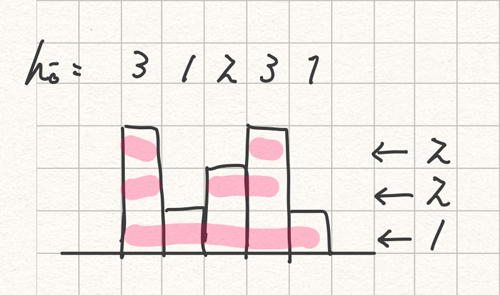

ABC116_C
各 \(h_i\) に必要な水やり回数を縦に積む. それを下から順に「連続した区間が何個できるか」を数えていき, 最後にそれらを合計する.
入力例2 の場合の考え方

code
N = int(input()) H = list(map(int, input().split())) cnt = 0 for i in range(1, 101): flg = False for j in range(N): if H[j] < i and flg: cnt += 1 flg = H[j] >= i if flg: cnt += 1 print(cnt)